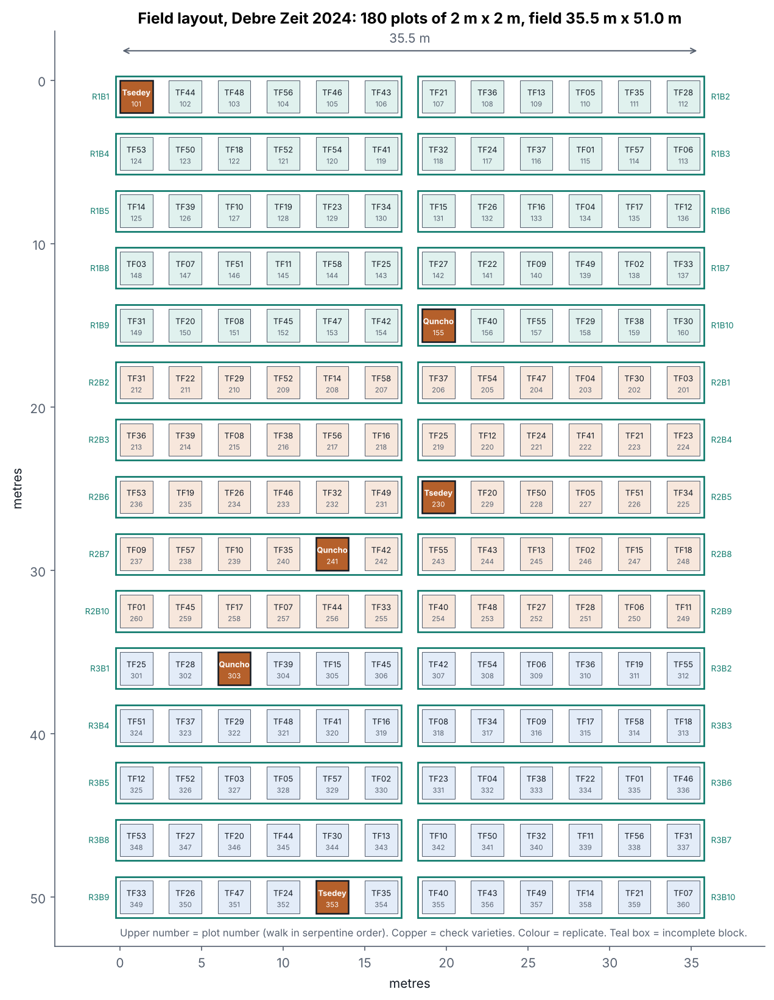
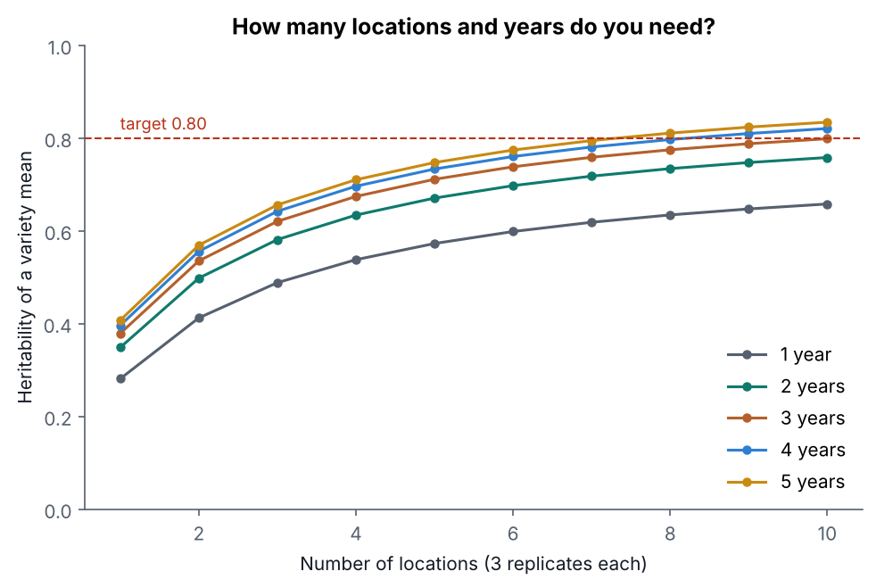
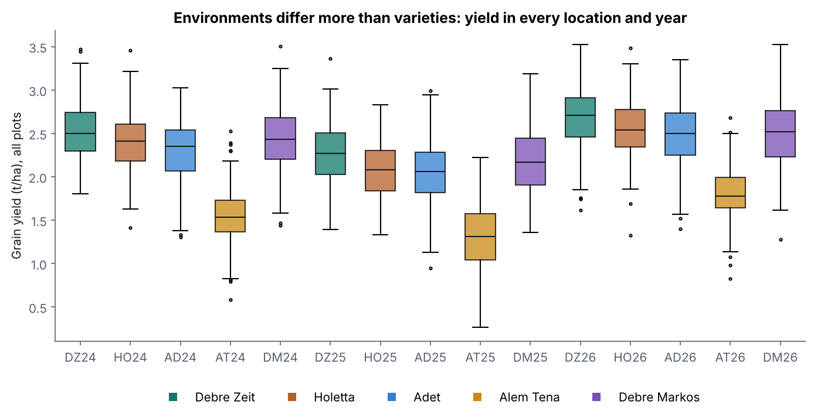
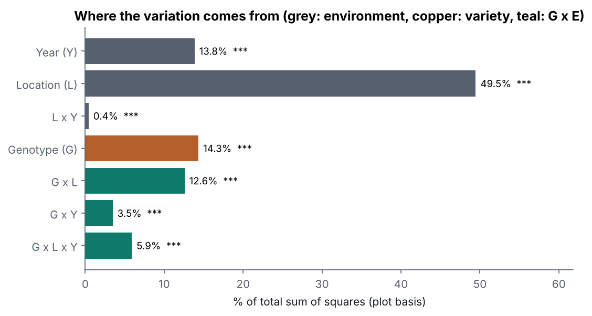
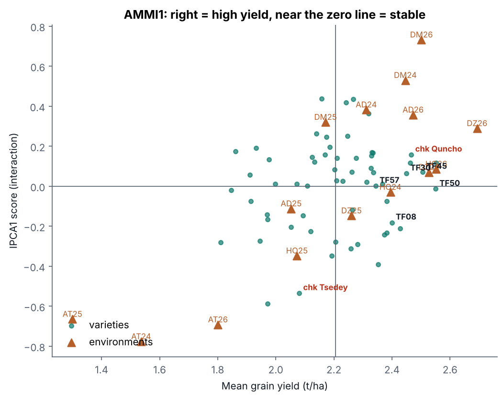
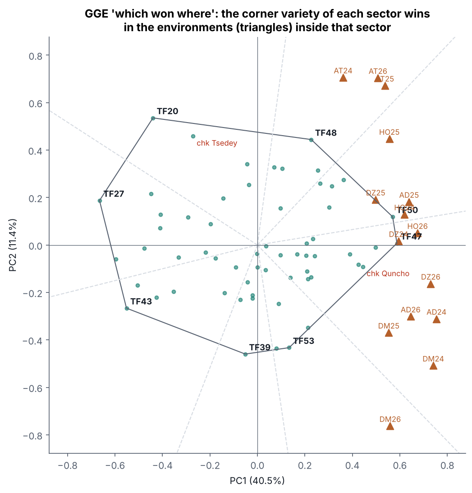
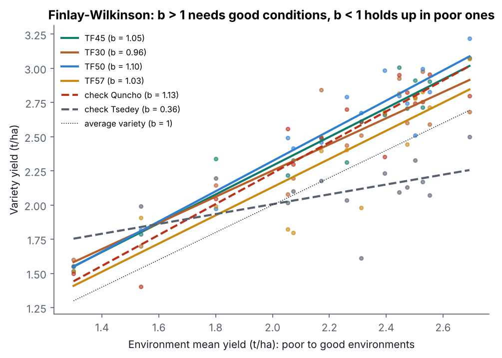
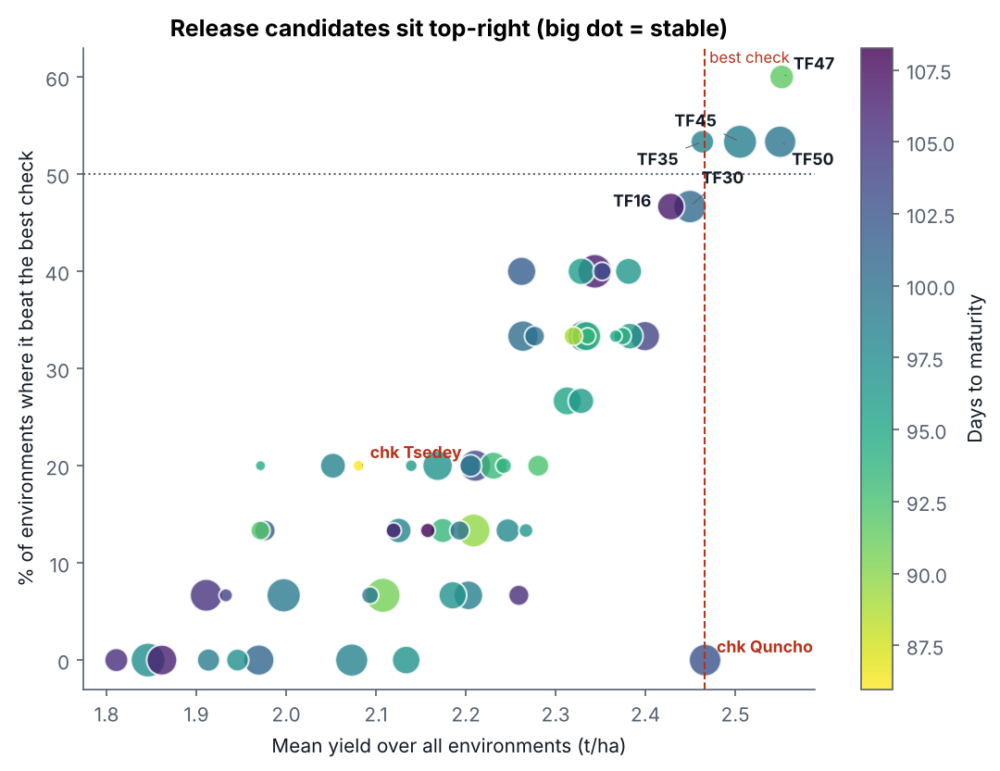
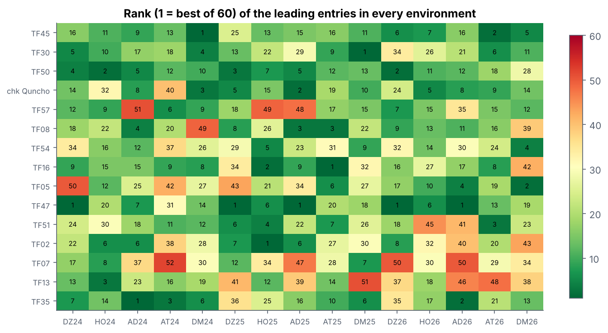

Module 1 · Testing 60 teff varieties across locations and years
ሞጁል 1 · 60 የጤፍ ዝርያዎችን በተለያዩ ቦታዎችና ዓመታት መሞከር
The business question. A breeder (or a seed company) has 58 new teff lines and must decide which to release, and where. Farmers pay for seed that wins in their field, in good years and bad. This module takes you from an empty field to that decision: design, field layout, data recording, every ANOVA, the G × E analysis, and the charts a release committee asks for.
The data here are simulated for teaching, with realistic Ethiopian values: trial practice follows published national teff trials (2 m × 2 m plots, three replications, alpha-lattice blocks), and the national average farm yield of teff is about 1.9 t/ha. Replace the data with your own field books and run the same script.
1. The trial plan
| Item | Choice | Why |
|---|---|---|
| Entries | 58 candidate lines + 2 checks = 60 | Checks: Quncho (high-potential areas) and Tsedey (low-moisture areas), so every line is compared with what farmers already grow |
| Design | Alpha-lattice, 3 replicates, 10 incomplete blocks of 6 plots per replicate | 60 plots in one block would span very different soil; small blocks of 6 remove that soil trend. Every pair of varieties shares a block at most once (checked by the script) |
| Plot | 2 m × 2 m = 4 m², rows 20 cm apart; 1 m between plots, 1.5 m between blocks | Standard for national teff trials |
| Field size per site | 35.5 m × 51.0 m ≈ 0.18 ha, 180 plots | Fits on one research-station field |
| Seed | 12 g per plot (30 kg/ha); 36 g per variety per site, 2.16 kg per site | Prepare and label seed packets before the season |
| Locations | Debre Zeit, Holetta, Adet, Debre Markos (high potential) and Alem Tena (low moisture) | Cover the target region, including the dry end |
| Years | 3 (2024–2026); the script handles 2 to 5 | Years differ in rainfall, which you cannot predict, so you need more than one |
| Randomisation | New for every site and every year | Field books are in fieldbooks/ |
| Traits | Grain yield, days to maturity, plant height, lodging | Yield pays; maturity decides fit to the season |
Field layout (one site, one year)

How to lay it out: peg the 35.5 m × 51 m rectangle, mark the 15 plot rows (every 3.5 m), and in each row two blocks of six 2 m plots. Walk the plots in serpentine order: plot 101 is top-left, plot 112 top-right, plot 113 starts back on the right. Sow, label each plot with its plot number (not the variety name, so scorers are not biased), and keep the field book in a plastic sleeve.
Recording yield
Harvest the whole 4 m² plot (or a fixed net area if borders were damaged), thresh, clean and weigh the grain in grams. Convert:
yield (t/ha) = grams per plot ÷ (plot area in m² × 100) e.g. 1,000 g ÷ (4 × 100) = 2.5 t/ha
Record days to maturity when about 90% of the panicles are mature, and note anything unusual (hail, waterlogging, birds) in the notes column. The analysis can only fix what you wrote down.
2. Step 1: analyse each site and year separately
For each of the 15 environments the script fits replicate + block within replicate + variety, with variety tested after removing the block effects.
ANOVA for Debre Zeit 2024:
| Source | df | SS | MS | F | p |
|---|---|---|---|---|---|
| Replication | 2 | 0.702 | 0.351 | 5.349 | 0.006 |
| Block(Rep), unadjusted | 27 | 2.097 | 0.078 | 1.183 | 0.273 |
| Genotype, adjusted | 59 | 12.043 | 0.204 | 3.110 | <0.001 |
| Residual | 91 | 5.973 | 0.066 |
Quality check for every environment:
| Env | Mean t/ha | CV % | LSD 5% | H² | Efficiency vs RCBD % |
|---|---|---|---|---|---|
| DZ24 | 2.53 | 10.14 | 0.42 | 0.68 | 111.00 |
| HO24 | 2.39 | 11.89 | 0.46 | 0.57 | 96.37 |
| AD24 | 2.31 | 8.95 | 0.34 | 0.83 | 94.79 |
| AT24 | 1.54 | 17.78 | 0.44 | 0.59 | 101.30 |
| DM24 | 2.45 | 9.68 | 0.38 | 0.78 | 117.09 |
| DZ25 | 2.26 | 11.62 | 0.43 | 0.63 | 101.85 |
| HO25 | 2.07 | 9.77 | 0.33 | 0.79 | 116.62 |
| AD25 | 2.05 | 11.12 | 0.37 | 0.76 | 103.90 |
| AT25 | 1.30 | 18.62 | 0.39 | 0.68 | 117.02 |
| DM25 | 2.17 | 10.44 | 0.37 | 0.75 | 125.68 |
| DZ26 | 2.69 | 8.57 | 0.37 | 0.77 | 107.51 |
| HO26 | 2.55 | 8.75 | 0.36 | 0.77 | 106.55 |
| AD26 | 2.47 | 10.02 | 0.40 | 0.74 | 97.93 |
| AT26 | 1.80 | 11.83 | 0.35 | 0.76 | 113.06 |
| DM26 | 2.50 | 10.71 | 0.43 | 0.65 | 120.69 |
What to look at
- CV% (coefficient of variation) should be below about 15–20%. Alem Tena, the dry site, is the noisiest, as dry sites usually are.
- Efficiency vs RCBD above 100% means the small blocks paid off: the same data analysed as an ordinary randomised complete block design would have had a larger error.
- Heritability (H²) shows how well one site ranks the varieties. One site alone is never enough.
3. Step 2: combined analysis over locations and years
Locations and years are treated as random: they stand for the farms and the future seasons where the variety will be grown. So the variety effect is tested against the interactions, not only against plot error.
| Source | df | SS | MS | F | p | % of SS |
|---|---|---|---|---|---|---|
| Year (Y) | 2 | 86.111 | 43.056 | 132.313 | <0.001 | 13.800 |
| Location (L) | 4 | 307.903 | 76.976 | 236.552 | <0.001 | 49.500 |
| L x Y | 8 | 2.603 | 0.325 | 5.586 | <0.001 | 0.400 |
| Genotype (G) | 59 | 89.283 | 1.513 | 3.464 | <0.001 | 14.300 |
| G x L | 236 | 78.254 | 0.332 | 4.270 | <0.001 | 12.600 |
| G x Y | 118 | 21.581 | 0.183 | 2.355 | <0.001 | 3.500 |
| G x L x Y | 472 | 36.655 | 0.078 | 1.333 | <0.001 | 5.900 |
| Pooled error | 1365 | 79.519 | 0.058 |
What it means
- The environment (location and year) causes most of the variation. That is normal and is not what you select on.
- G × L (12.6% of SS) is much larger than G × Y (3.5%). Variety ranking changes between locations in a repeatable way, but changes little between years. Repeatable differences can be used: recommend varieties for groups of locations, not for the whole country.
- Variance components (plot basis): genotype 0.0239, G × L 0.0282, G × Y 0.0070, G × L × Y 0.0065, error 0.0583.
4. Step 3: how many locations and years do you need?

With 5 locations, one year gives a heritability of 0.573, three years 0.711. Because G × L is large, adding locations helps more than adding years. Reaching 0.80 for the whole region needs about 8–10 locations; testing within each mega-environment (Step 4) is the cheaper way.
5. Step 4: AMMI and GGE: who wins where?


| Source | df | SS | MS | % of G x E | F | p |
|---|---|---|---|---|---|---|
| IPCA1 | 72 | 26.445 | 0.367 | 19.375 | 6.305 | <0.001 |
| IPCA2 | 70 | 24.148 | 0.345 | 17.692 | 5.922 | <0.001 |
| IPCA3 | 68 | 19.055 | 0.280 | 13.961 | 4.810 | <0.001 |
| IPCA4 | 66 | 14.990 | 0.227 | 10.982 | 3.899 | <0.001 |


The GGE biplot (PC1 40.5% + PC2 11.4% of variety + G × E variation) splits the environments into sectors. The variety at the corner of a sector wins there:
- Low-moisture mega-environment (Alem Tena 2024, Alem Tena 2025, Alem Tena 2026): TF48 wins. Over the three Alem Tena seasons it averaged 2.01 t/ha against 1.91 t/ha for the drought check Tsedey and 1.65 t/ha for Quncho.
- High-potential mega-environment (Debre Zeit, Adet, Debre Markos, Holetta): TF47 and TF50 win. TF47 averaged 2.77 t/ha against 2.67 t/ha for Quncho, and it matures about 11 days earlier.
6. Step 5: stability

A slope b near 1 means the variety follows the environment like an average variety; b > 1 means it needs good conditions to shine; b < 1 means it holds up in poor conditions but cannot use good ones. The drought check Tsedey (b ≈ 0.36) is the classic "safe but low ceiling" type.
7. Step 6: the decision


Top entries by the yield–stability index (rank of mean yield + rank of AMMI stability value, smaller is better):
| Entry | Mean t/ha | % vs best check | % envs beating check | Worst env t/ha | b (FW) | ASV | Maturity days | Yield-stability index |
|---|---|---|---|---|---|---|---|---|
| TF45 | 2.51 | 1.58 | 53.33 | 1.52 | 1.05 | 0.11 | 98.80 | 8.00 |
| TF30 | 2.45 | -0.68 | 46.67 | 1.60 | 0.96 | 0.13 | 100.53 | 13.00 |
| TF50 | 2.55 | 3.39 | 53.33 | 1.55 | 1.10 | 0.18 | 99.62 | 13.00 |
| Check-Quncho | 2.47 | 0.00 | 0.00 | 1.41 | 1.13 | 0.18 | 102.76 | 14.00 |
| TF57 | 2.34 | -4.98 | 40.00 | 1.52 | 1.03 | 0.05 | 106.67 | 17.00 |
| TF08 | 2.40 | -2.72 | 33.33 | 1.69 | 0.84 | 0.20 | 103.80 | 26.00 |
| TF54 | 2.33 | -5.49 | 33.33 | 1.24 | 1.13 | 0.19 | 99.42 | 30.00 |
| TF16 | 2.43 | -1.54 | 46.67 | 1.79 | 0.78 | 0.23 | 106.84 | 33.00 |
Recommendation
- Advance TF47 and TF50 to variety verification trials in high-potential areas. TF47 beats Quncho in 60% of environments and matures earlier, which also helps farmers escape end-of-season drought.
- Advance TF48 for low-moisture areas such as the Alem Tena corridor. It is not the best nationally, but it is the best where farmers have the fewest options.
- Keep TF45 as the most widely stable line (top of the yield–stability index) for farmers who cannot choose by location.
- Drop the lines that never beat the checks: they cost land and labour every season.
Value to a farmer (example price 120 birr/kg): every extra 0.1 t/ha is worth 12,000 birr per hectare per season. TF48 in the dry area gives about 0.36 t/ha more than Quncho, about 43,461 birr/ha.
8. From variety to business
A released variety is only valuable when farmers can buy clean seed of it.
- Seed multiplication arithmetic: a 1 ha seed field yielding 2.5 t of clean seed sows about 140 ha at 18 kg/ha (the upper end of the 15–18 kg/ha recommended for row planting), or 83 ha at 30 kg/ha broadcast.
- Business models: a youth seed-producer cooperative licensed to multiply the variety; a seed-cleaning and packing service; contract growing for a processor that wants one grain colour.
- What to measure next: farmer-preferred traits (grain colour, injera quality, straw for cattle) through participatory variety selection in the target mega-environment.
9. Run it yourself
pip install numpy pandas scipy matplotlib
python run.py # design, field books, analysis and all figures
- Your own data: collect the 15 field books into one CSV with the same columns as
data/teff_met_simulated.csvand setDATA_FILEat the top ofrun.py. - Another crop or size: change
N_TEST,CHECKS,BLOCK_SIZE,REPS,LOCATIONSandYEARS. Block size must not exceed the number of blocks per replicate (e.g. 100 entries: blocks of 10; 36 entries: blocks of 6). - R users:
R/teff_met.Rdoes the same analysis with agricolae, lme4 and metan.
Outputs: tables/ (every ANOVA, means, decision table) and figures/.
በአማርኛ አጭር ማጠቃለያ
- ጥያቄው፦ ከ58 አዳዲስ የጤፍ መስመሮች የትኛው ይለቀቅ፣ የትስ?
- ዲዛይኑ፦ አልፋ-ላቲስ፣ 3 ድግግሞሽ፣ በእያንዳንዱ ድግግሞሽ 6 ማሳ ያላቸው 10 ብሎኮች፤ 2 ሜ × 2 ሜ ማሳ፤ 5 ቦታዎች × 3 ዓመታት፤ በየዓመቱ አዲስ የዕጣ ድልድል።
- ውጤቱ፦ አካባቢ ትልቁን ልዩነት ያመጣል፤ የዝርያ × የቦታ መስተጋብር ከዝርያ × የዓመት መስተጋብር ይበልጣል፤ ስለዚህ ዝርያዎችን በአካባቢ ቡድን መምከር ይገባል።
- ውሳኔው፦ TF47 እና TF50 ለከፍተኛ አቅም ቦታዎች (TF47 ከኩንቾ 11 ቀን ገደማ ቀድሞ ይደርሳል)፤ TF48 ለዝቅተኛ እርጥበት ቦታዎች (አለም ጤና)፤ TF45 በሰፊው የተረጋጋ።
- ንግዱ፦ 1 ሄክታር የዘር ማሳ በመስመር ተዘርቶ 140 ሄክታር ገደማ ለመዝራት በቂ ዘር ይሰጣል፤ ወጣቶች ዘር አባዢ ማኅበር ሊያቋቁሙ ይችላሉ።
Data in this module are simulated for teaching. Trial practice follows published Ethiopian teff trials: Worede 2020, BSJ Agri (2 m × 2 m plots, AMMI/GGE) · Jifar et al. 2019, J. Exp. Agric. Int. (35 varieties, nine environments) · Kulle variety release, Ethiop. J. Agric. Sci. (drilled rows 0.2 m, SS shares) · 70 tef genotypes in a 7 × 10 alpha-lattice, Hawassa Univ. journal (Quncho and Tsedey checks) · Northeast Ethiopia tef G × E, Cogent Food & Agric. (30 kg/ha, 12 g per plot) · national tef yield 1.91 t/ha, 2021–22 · seed rate 15–18 kg/ha for row planting.